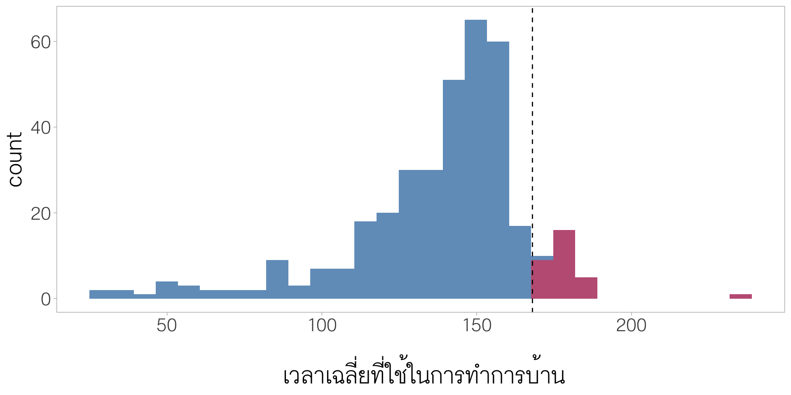
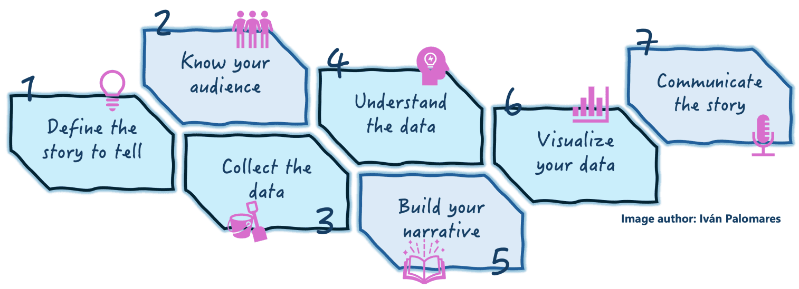
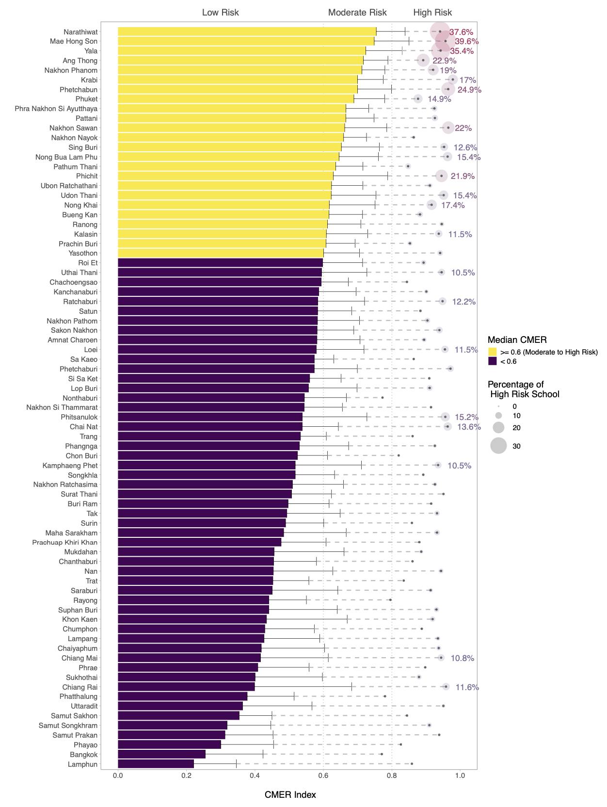
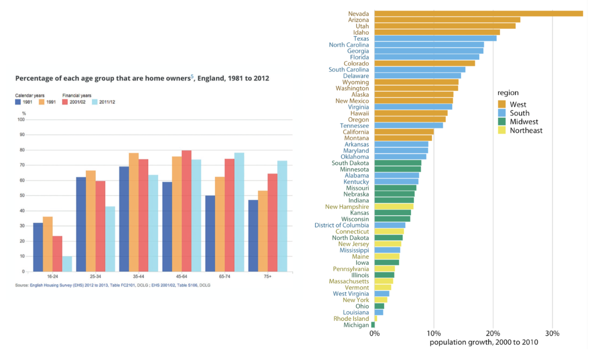
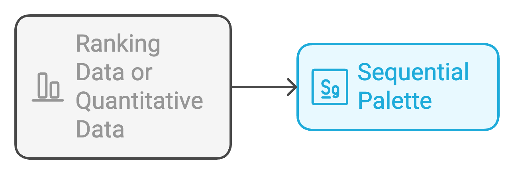
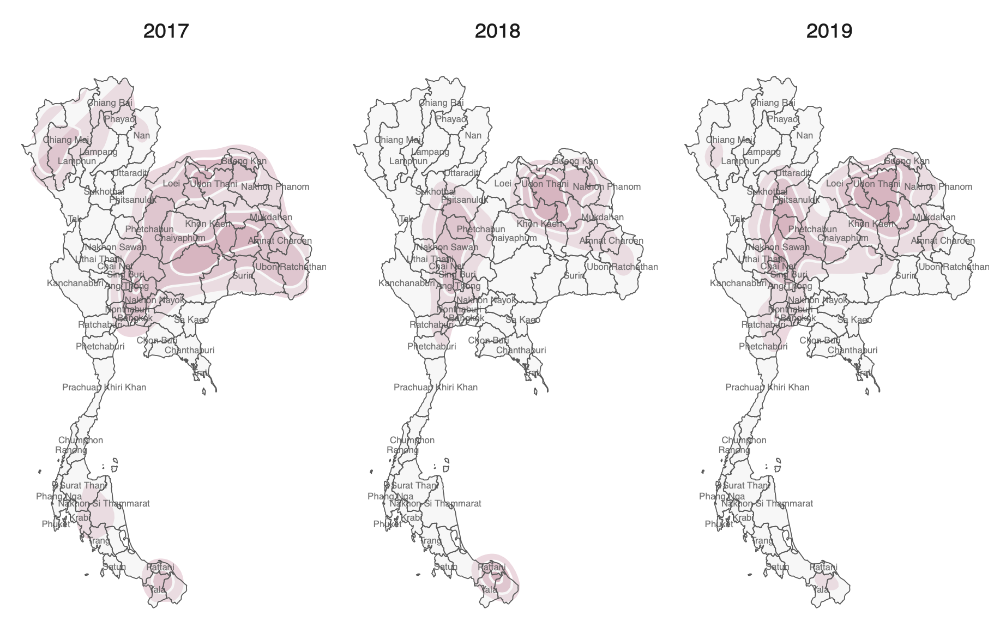
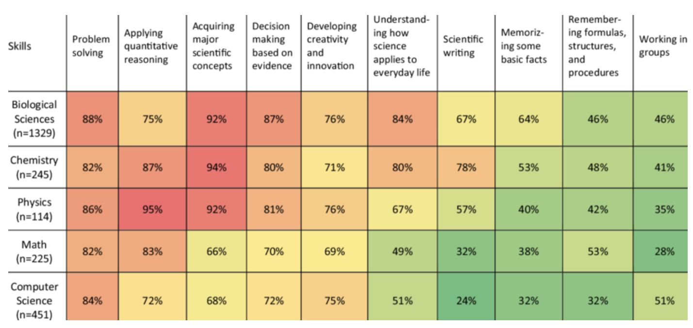

Communicating Data for Decision-Making in the Classroom
2025-04-01
Data-Driven Classroom

Data Literacy


Communicating with Data
กระบวนการจัดระเบียบและนำเสนอข้อมูลในลักษณะที่เป็นสารสนเทศ ที่สามารถเข้าใจได้ มีความหมาย และสามารถใช้ได้จริง เพื่อสนับสนุนการแลกเปลี่ยนข้อมูลเกี่ยวกับการเรียนรู้ของผู้เรียนอย่างมีเป้าหมาย
ทำความเข้าใจ/แจ้งเตือนสภาพการเรียนรู้ของนักเรียนโดยใช้ข้อมูลเป็นฐาน
สนับสนุนการวางแผน/ออกแบบการจัดการเรียนรู้ การสนับสนุนที่สอดคล้องกับความต้องการของผู้เรียน
กำกับติดตามและประเมินผลการเรียนรู้ของผู้เรียน
ส่งเสริมความร่วมมือระหว่างผู้เรียน ครู ผู้ปกครอง และผู้เกี่ยวข้อง
Bolz and Madhavan (2023)
Effective Data Communication
องค์ประกอบของการสื่อสารข้อมูลที่มีประสิทธิภาพ ได้แก่
มีการส่งสารที่ชัดเจน (delivering clear messages)
สามารถส่งเสริม/สร้างความร่วมมือระหว่างผู้เกี่ยวข้อง (fostering collaboration)
มีบริบทของข้อมูล (providing context)
ใช้ทัศนภาพข้อมูลในการสื่อสาร (using data visualization)


7-step to Effective Communicating Data


Data StoryTelling Canvas Example
Define the Key Message: กำหนดเนื้อหา/ข้อความหลักที่ต้องการสื่อสารผ่านข้อมูล (เลือกมาจาก insight ที่ได้จากการวิเคราะห์ก่อนหน้า)
Audience: ทำความเข้าใจ/รู้จักผู้รับข้อมูล เช่น ภูมิหลัง ความสนใจ ความรู้พื้นฐาน แรงจูงใจ เพื่อใช้เป็นข้อมูลประกอบการสร้างเรื่องราวที่เหมาะสม
Relevant Data: เก็บรวบรวมหรือระบุข้อมูลที่จำเป็นสำหรับเรื่องราว แหล่งที่มาของข้อมูล ประเภทข้อมูล ความน่าเชื่อถือของข้อมูล
-
Insight Discovery: ผลการวิเคราะห์แสดง insight ว่าอย่างไร
- ความสัมพันธ์เชิงลบระหว่างคะแนนกับเวลา
-
Craft the Narrative:
แนะนำบริบท –> ทำไมเรากำลังพูดถึงเรื่องนี้?
ข้อค้นพบหลัก –> ข้อมูล/ข้อเท็จจริงบอกอะไร?
ความท้าทาย –> สิ่งที่ควรต้องระวัง?
ข้อเสนอเชิงปฏิบัติ –> แล้วเราควรทำอะไร?
Visual Element: เลือกประเภทและออกแบบทัศนภาพข้อมูลอย่างเหมาะสม
Communicate Effectively นำเสนอเรื่องราวผ่านรูปแบบการนำเสนอที่เหมาะสม
Data StoryTelling Canvas Example
Define the Key Message: ไม่ควรเพิ่มเวลาในการทำการบ้าน เพราะไม่ได้ทำให้คุณภาพของงานดีขึ้น
Audience: นักเรียนในชั้นเรียน ระดับปริญญาตรี ในรายวิชาสถิติ
-
Relevant Data:
Source: ข้อมูลในชั้นเรียนจากระบบ LMS
-
Data:
เวลาเฉลี่ยที่นักเรียนแต่ละคนใช้ในการทำการบ้าน (ชั่วโมง)
คะแนนคุณภาพการบ้าน (%)
-
Insight Discovery:
- ความสัมพันธ์เชิงลบระหว่างคะแนนกับเวลา
Data StoryTelling Canvas Example
-
Craft the Narrative:
แนะนำบริบท –> ภายหลังจากนักเรียนขอให้อาจารย์ขยายเวลาส่งการบ้าน อาจารย์ได้ดำเนินการวิเคราะห์ข้อมูลพฤติกรรมการเรียนและคุณภาพของการบ้านจากระบบ LMS เพื่อตรวจสอบสมมุติฐานว่า การให้เวลาทำการบ้านมากขึ้นจะช่วยให้คุณภาพการบ้านดีขึ้น
ข้อค้นพบหลัก –> ผลการวิเคราะห์ความสัมพันธ์ด้วย boxplot พบว่า คะแนนคุณภาพการบ้านของนักเรียนที่ส่งงานเกินเดทไลน์มีแนวโน้มต่ำกว่ากลุ่มนักเรียนที่ส่งงานตรงเวลา
ความท้าทาย –> ถึงแม้นักเรียนจะมีความตั้งใจขอเวลาเพิ่มเพื่อปรับปรุงผลงานให้ดี แต่ข้อเท็จจริงบ่งชี้ว่าการมีเวลาที่เพิ่มขึ้นไม่ได้ส่งผลให้คุณภาพงานดีขึ้น สิ่งนี้สะท้อนว่าการที่นักเรียนต้องการเวลาทำงานเพิ่มอาจมีสาเหตุมาจากปัจจัยอื่น เช่น อาจมีความยากลำบากในการเรียน ไม่เข้าใจบทเรียน ขาดทักษะในการบริหารเวลา หรือไม่รับผิดชอบ
ข้อเสนอเชิงปฏิบัติ –> ประเด็นเหล่านี้นำไปสู่การวิเคราะห์ข้อมูลเพิ่มเติม และออกแบบการสนับสนุนการเรียนรู้ที่ตอบโจทย์มากกว่าการขยายเวลาเพียงอย่างเดียว
Communicate Effectively

Knaflic (2015)
Presentation Slide
InfoGraphic
One-page Report
Full Report
Dashboard
Data Visualization
“The visual representation and presentation of data to facilitate understanding” (Kirk 2019)
ดึงดูดความสนใจ: แผนภูมิและกราฟมีความสวยงาม ดูง่าย และน่าสนใจ ช่วยให้ผู้รับสารมีความสุขในการอ่านและทำความเข้าใจกับเนื้อหา (การออกแบบที่ดีช่วยยกระดับรายงานให้ดูน่าสนใจมากขึ้น ไม่ว่าจะมีข้อมูลหรือไม่)
ความเข้าใจ: การออกแบบที่ดีช่วยให้ผู้รับข้อมูลทำความเข้าใจได้ง่ายและรวดเร็วยิ่งขึ้น ลองคิดดูว่า การตีความข้อมูลเป็นตัวเลขในสเปรดชีตกับกราฟแท่งที่แสดงแนวโน้มเพิ่มขึ้นนั้น แบบไหนทำความเข้าใจได้ง่ายกว่า?
การจดจำ: นอกจากการเข้าใจแล้ว สมองยังสามารถจดจำภาพได้ง่ายขึ้น ทำให้สามารถเรียกคืนข้อมูลนั้นได้ง่ายกว่าในภายหลัง

Sources: Paul Martin Lester, “Syntactic Theory of Visual Communications,” 2006, and Harris Eisenberg, “Humans Process Visual Data Better,” Thermopylae Sciences, September 15, 2014.
Why’s Visualization
เป็นเครื่องมือที่สามารถนำเสนอข้อมูลปริมาณมากได้อย่างมีประสิทธิภาพ


“Bad graphs are everywhere” (Knaflic 2015)

“Bad graphs are everywhere” (Knaflic 2015)

“Bad graphs are everywhere” (Knaflic 2015)

Good Charts

Mislead Data Visualization
Color as Distinguish Tools
สำหรับข้อมูลจัดประเภท เราสามารถเลือกโทนสี (hue) ที่แตกต่างกันเพื่อแทนประเภทของข้อมูลบนแผนภาพ ซึ่งช่วยให้ผู้อ่านสามารถแยกแยะความแตกต่างได้ง่าย


Represent Data Values
สีสามารถใช้แทนค่าข้อมูลที่เป็นเชิงปริมาณ (quantitative data) หรือเป็นข้อมูลแบบอันดับ (rank data) ได้ด้วย


Represent Data Values


Color as Highlight Tool

Color as Highlight Tool

ตัวอย่าง Qualitative Palette

Color Blindness

Unnecessary Use of Color


Unnecessary Use of Color

Mood & Tone
Color Emotion Guide เป็นแนวทางที่อธิบายความเชื่อมโยงระหว่างสีและอารมณ์ความรู้สึกของมนุษย์ โดยมีหลักการว่าสีแต่ละสีสามารถกระตุ้นความรู้สึกนึกคิดที่แตกต่างกันได้ โดยสีบางสีสื่อถึงความอ่อนโยน บางสีสื่อถึงความหนักแน่น/ความน่าเชื่อถือ บางสีทำให้รู้สึกอบอุ่น การใช้สีอย่างเหมาะสมจึงช่วยเพิ่มประสิทธิภาพของการสื่อสารข้อมูลได้

https://connorrothschild.github.io/v2/post/color-in-data-vis/
Mood and Tone




User Accessibility
ง่ายในการอ่านและเข้าใจความหมาย: ออกแบบ visualization ที่สอดคล้องกับความรู้ ความเคยชิน หรือความคุ้นเคยของกลุ่มเป้าหมาย ควรให้บริบทของข้อมูลที่เพียงพอ ไม่ควรต้องให้ผู้อ่านตีความมากเกินไป

เพิ่มข้อมูลเชิงบริบทที่จำเป็น

Comparative

Comparative + Historical + Equivalent
Comparative
Comparative + Information

Scale Up/Down
Data StoryTelling Canvas Example
Define the Key Message: กำหนดเนื้อหา/ข้อความหลักที่ต้องการสื่อสารผ่านข้อมูล (เลือกมาจาก insight ที่ได้จากการวิเคราะห์ก่อนหน้า)
Audience: ทำความเข้าใจ/รู้จักผู้รับข้อมูล เช่น ภูมิหลัง ความสนใจ ความรู้พื้นฐาน แรงจูงใจ เพื่อใช้เป็นข้อมูลประกอบการสร้างเรื่องราวที่เหมาะสม
Relevant Data: เก็บรวบรวมหรือระบุข้อมูลที่จำเป็นสำหรับเรื่องราว แหล่งที่มาของข้อมูล ประเภทข้อมูล ความน่าเชื่อถือของข้อมูล
-
Insight Discovery: ผลการวิเคราะห์แสดง insight ว่าอย่างไร
- ความสัมพันธ์เชิงลบระหว่างคะแนนกับเวลา
-
Craft the Narrative:
แนะนำบริบท –> ทำไมเรากำลังพูดถึงเรื่องนี้?
ข้อค้นพบหลัก –> ข้อมูล/ข้อเท็จจริงบอกอะไร?
ความท้าทาย –> สิ่งที่ควรต้องระวัง?
ข้อเสนอเชิงปฏิบัติ –> แล้วเราควรทำอะไร?
Visual Element: เลือกประเภทและออกแบบทัศนภาพข้อมูลอย่างเหมาะสม
Communicate Effectively นำเสนอเรื่องราวผ่านรูปแบบการนำเสนอที่เหมาะสม
Data StoryTelling Canvas Example
Define the Key Message: ไม่ควรเพิ่มเวลาในการทำการบ้าน เพราะไม่ได้ทำให้คุณภาพของงานดีขึ้น
Audience: นักเรียนในชั้นเรียน ระดับปริญญาตรี ในรายวิชาสถิติ
-
Relevant Data:
Source: ข้อมูลในชั้นเรียนจากระบบ LMS
-
Data:
เวลาเฉลี่ยที่นักเรียนแต่ละคนใช้ในการทำการบ้าน (ชั่วโมง)
คะแนนคุณภาพการบ้าน (%)
-
Insight Discovery:
- ความสัมพันธ์เชิงลบระหว่างคะแนนกับเวลา
Data StoryTelling Canvas Example
-
Craft the Narrative:
แนะนำบริบท –> ภายหลังจากนักเรียนขอให้อาจารย์ขยายเวลาส่งการบ้าน อาจารย์ได้ดำเนินการวิเคราะห์ข้อมูลพฤติกรรมการเรียนและคุณภาพของการบ้านจากระบบ LMS เพื่อตรวจสอบสมมุติฐานว่า การให้เวลาทำการบ้านมากขึ้นจะช่วยให้คุณภาพการบ้านดีขึ้น
ข้อค้นพบหลัก –> ผลการวิเคราะห์ความสัมพันธ์ด้วย boxplot พบว่า คะแนนคุณภาพการบ้านของนักเรียนที่ส่งงานเกินเดทไลน์มีแนวโน้มต่ำกว่ากลุ่มนักเรียนที่ส่งงานตรงเวลา
ความท้าทาย –> ถึงแม้นักเรียนจะมีความตั้งใจขอเวลาเพิ่มเพื่อปรับปรุงผลงานให้ดี แต่ข้อเท็จจริงบ่งชี้ว่าการมีเวลาที่เพิ่มขึ้นไม่ได้ส่งผลให้คุณภาพงานดีขึ้น สิ่งนี้สะท้อนว่าการที่นักเรียนต้องการเวลาทำงานเพิ่มอาจมีสาเหตุมาจากปัจจัยอื่น เช่น อาจมีความยากลำบากในการเรียน ไม่เข้าใจบทเรียน ขาดทักษะในการบริหารเวลา หรือไม่รับผิดชอบ
ข้อเสนอเชิงปฏิบัติ –> ประเด็นเหล่านี้นำไปสู่การวิเคราะห์ข้อมูลเพิ่มเติม และออกแบบการสนับสนุนการเรียนรู้ที่ตอบโจทย์มากกว่าการขยายเวลาเพียงอย่างเดียว
Reproducible Report in Exploratory.io
Exploratory.io และโปรแกรมวิเคราะห์ข้อมูลสมัยใหม่อีกหลายตัวมี feature ที่สามารถสร้างรายงานผลการวิเคราะห์ที่มีการเชื่อมต่อกับ module การวิเคราะห์ข้อมูล ทำให้รายงานสามารถ update ได้โดยอัตโนมัติเมื่อมีข้อมูลใหม่ถูกเพิ่มหรือปรับเปลี่ยน
รายงานจะมีความเป็นปัจจุบันเสมอ และสามารถทำซ้ำเปลี่ยนแปลงได้ง่าย

Dashboard

Classroom Dashboard